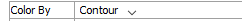
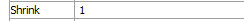
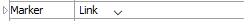
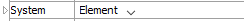

壳绘图项
说明
以线显示壳单元的位置。该绘图项最前面的几个属性取决于第一个属性（contingent on the first attribute）（按…着色）。
属性
按…着色（Color By） 标签/值（Label/Value） 等值线/颜色列表（Contour/Color-List） 多边形（Polygons） 仅所选（Selected Only） 收缩（Shrink） 标记（Marker） 系统（System） 映射（Map） 变形系数（Def-fac） 透明度（Transparency） 图例（Legend）
按…着色

将“标签”或“等值线”设置为在绘图项上着色。
标签/值

指定在绘图项中显示哪个标签或值（由上一项设置决定）。两者的选项如下表所示。某些选项需要额外的、动态提供的属性才能完成选择；这些选项在表中有标注说明。
| 标签 | 值ᴰ |
|---|---|
| 施加的压力 | 加速度ᶜ |
| 连接条件ᵈ | 施加的压力 |
| 集合 ID | 收敛 |
| 密度 | 耦合孔隙压力 |
| 单元的额外变量ᵉ | 耦合剪应力 |
| 节点的额外变量ᵉ | 连杆的相对位移 |
| 单元分组ˢ | 节点的位移ᶜ |
| 节点分组ˢ | 有效耦合法向应力 |
| 材料类型 | 单元的额外变量ᵉ |
| 特性ᵖ | 节点的额外变量ᵉ |
| 连杆的目标 | 连杆的力 |
| 厚度 | 间隙 1 |
| 类型 | 间隙 2 |
| 均匀 | 最大纤维应力 |
| 连杆的屈服状态ᵈ | 最大膜应力 |
| 最大弯矩 | |
| 最小纤维应力 | |
| 最小膜应力 | |
| 最小弯矩 | |
| 局部比 | |
| 目标比 | |
| 合力ʳ | |
| 应力ʸ | |
| 总耦合法向应力 | |
| 速度ᶜ |
| 图例说明： |
| ᶜ其后跟随一个“分量”属性 |
| ᵉ其后跟随一个“索引”属性 |
| ᵈ其后跟随一个“DOF”（自由度）属性 |
| ᵖ其后跟随一个“特性”属性 |
| ʳ其后跟随“合力”（及其他）属性 |
| ˢ其后跟随一个“槽位”属性 |
| ʸ其后跟随“量”（及其他）属性 |
| ᴰ所有“值”属性都提供一个“DOF”属性 |
颜色列表/等值线
此位置显示的属性是 颜色列表 或 等值线，取决于“按…着色”的选择。详情请参见标准的 颜色列表（color-list） 控件说明和标准的 等值线（contour） 控件说明。
多边形

设置项目面片的属性。详情请参见标准的 多边形（polygons） 控件说明。
仅所选

设置显示哪些单元。
仅所选：指定仅渲染所选中的绘图项单元（勾选时）。
收缩

减小渲染尺寸。
收缩：减小渲染尺寸，以便各个单元之间的间隙可见。取值必须在 .1 到 1 之间（1 = 不收缩）。
标记

控制表示单元位置的标记的渲染。
系统

设置用于指示局部坐标系的坐标轴的渲染。
系统：从“无”、“材料”、节点”、“单元”或“表面”选项中选择要用坐标轴指示的坐标系。
做出初始选择后提供的附加控制项，将与 坐标轴（Axes） 绘图项可用的控制项相对应。详情请参见该主题。
映射

将该项映射到新的模型坐标。详情请参见标准的 映射（map） 控件说明。
变形系数

设置变形系数。详情请参见标准的 变形系数（def-fac） 控件说明。
透明度

设置绘图项的透明度。详情请参见标准的 透明度（transparency） 控件说明。
图例

设置绘图图例中该项目的标签。详情请参见标准的 图例（legend） 控件说明。
在 标题 下方，壳绘图项还在 图例 中为 收缩、颜色列表、映射、变形系数 和 数量 提供控件。
| 这些内容对您有帮助吗？… 版权与免责声明 |
FLAC3D © 2019, Itasca | 原文更新于 2020 年 10 月 8 日 |